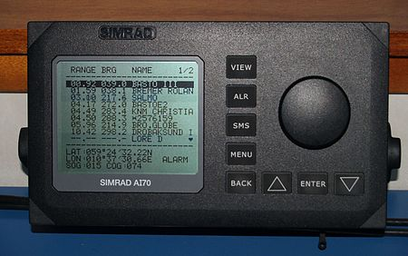

АИС (Автоматическая идентификационная система, (англ. AIS Automatic Identification System) — система в судоходстве, служащая для идентификации судов, их габаритов, курса и других данных с помощью радиоволн диапазона УКВ.

В последнее время появилась тенденция трактовать АИС как Автоматическая информационная система, (англ. AIS Automatic Information System), что связано с расширением функциональности системы по сравнению с ординарной задачей идентификации судов.
В соответствии с Конвенцией SOLAS 74/88 является обязательным для судов валовой вместимостью свыше 300, совершающих международные рейсы, судов валовой вместимостью 500 и более , не совершающих международные рейсы, и всех пассажирских судов. Суда и яхты с меньшим водоизмещением могут быть оборудованы прибором класса Б. Передача данных осуществляется на международных каналах связи AIS 1 и AIS 2 в протоколе SOTDMA (англ. Self Organising Time Division Multiple Access). Применяется частотная модуляция с манипуляцией GMSK.